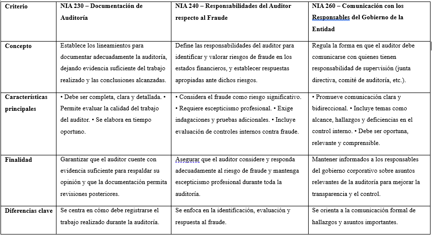

Curso: Ética y Responsabilidad Social para la Gestión de las Organizaciones
Fase 5 – Responsabilidad Ética del Profesional Contable en las Organizaciones
Desarrollado por: Brayan José Alemán González
Responsabilidad de la ética en los Contadores Públicos
La ética profesional constituye uno de los pilares fundamentales en el ejercicio del contador público, ya que su labor tiene un impacto directo en la confianza de la sociedad, la transparencia de las organizaciones y la estabilidad del sistema económico. El contador público no solo administra cifras, sino que es responsable de garantizar que la información financiera refleje fielmente la realidad económica de las entidades, permitiendo una toma de decisiones responsable y justa.
La responsabilidad ética del contador público se manifiesta en el cumplimiento de principios como la integridad, la objetividad, la confidencialidad, la competencia profesional y la conducta ética. Estos principios orientan su actuar frente a situaciones complejas donde pueden existir presiones internas o externas para alterar la información contable, ocultar irregularidades o favorecer intereses particulares. Mantener una conducta ética implica anteponer el interés público sobre el beneficio personal o empresarial.
Asimismo, la ética fortalece la credibilidad de la profesión contable. La sociedad deposita su confianza en los contadores para validar información financiera que sirve de base para inversiones, decisiones gubernamentales y control fiscal. Cuando un contador actúa sin ética, no solo afecta a la organización para la que trabaja, sino que deteriora la imagen de toda la profesión y debilita la confianza pública.
En un entorno empresarial cada vez más competitivo y regulado, la ética se convierte en un factor clave para la sostenibilidad organizacional. El contador ético contribuye a prevenir fraudes, promover buenas prácticas de gobierno corporativo y fortalecer los sistemas de control interno. De esta manera, su responsabilidad ética no es opcional, sino una obligación inherente a su rol profesional.
Brayan José Alemán González
Cuadro Comparativo: Ética y Responsabilidad Social en el Contador Público
Cuadro comparativo de las NIA 230, NIA 240 y NIA 260

El rol del contador público en el ámbito empresarial, financiero y de consultoría
El contador público se ha consolidado como un actor fundamental en el desarrollo organizacional, la sostenibilidad empresarial y la toma de decisiones financieras. Su labor excede ampliamente la elaboración de estados financieros; hoy actúa como asesor estratégico, garante de la transparencia y facilitador de la competitividad. En un entorno económico cada vez más dinámico, globalizado y regulado, el rol del contador se transforma para responder a desafíos complejos que requieren tanto rigor técnico como pensamiento crítico (Gómez, 2021).
En el ámbito empresarial, el contador público contribuye directamente al fortalecimiento de los sistemas de control interno, la gestión de riesgos y el cumplimiento normativo. Las empresas dependen de su capacidad para producir información veraz, oportuna y relevante, indispensable para planear, organizar y evaluar procesos. Además, su intervención favorece la eficiencia operativa mediante el análisis de costos, presupuestos y proyecciones, elementos que soportan la toma de decisiones de los directivos (López & Martínez, 2020). En este sentido, el contador se convierte en un aliado estratégico que impulsa el crecimiento empresarial.
En el ámbito financiero, el contador público desempeña un papel esencial en la interpretación de los indicadores económicos y financieros que determinan la estabilidad y viabilidad de las organizaciones. La correcta aplicación de estándares internacionales, como las NIIF, exige un profesional capaz de analizar escenarios, anticipar riesgos y garantizar que la información financiera refleje adecuadamente la realidad económica de las entidades (IFRS Foundation, 2023). Así, su función se orienta no solo a registrar transacciones, sino a generar conocimiento útil para inversionistas, entidades de control y stakeholders en general.
Por otra parte, en el campo de la consultoría, el contador público se ha posicionado como un experto capaz de orientar procesos de transformación organizacional, eficiencia tributaria, reestructuraciones y sostenibilidad empresarial. Su visión integral del negocio le permite asesorar a pequeñas, medianas y grandes empresas en la adopción de estrategias financieras y fiscales que optimizan recursos y minimizan contingencias (Pérez, 2019). La consultoría contable, por tanto, no es solo un servicio técnico, sino un acompañamiento basado en análisis, juicio profesional y ética.
En definitiva, el rol del contador público se encuentra en expansión, adaptándose a los retos tecnológicos, regulatorios y económicos actuales. Su labor es indispensable para asegurar la transparencia, la confianza pública y la adecuada gestión de los recursos. Más que un profesional encargado de cifras, es un actor clave en la construcción de organizaciones sólidas, competitivas y preparadas para enfrentar los cambios del entorno. Por ello, su formación debe continuar enfocándose en la ética, la capacidad analítica y la actualización permanente, elementos esenciales para aportar valor en los diferentes escenarios en los que interviene (Ramírez, 2022).
Opinión Personal Caso Odebrecht
Considero que un buen gobierno corporativo es fundamental para garantizar la transparencia, la ética y la sostenibilidad de las organizaciones, especialmente cuando se analizan casos como el de Odebrecht. Este caso evidenció cómo la ausencia de controles efectivos, la concentración del poder en pocos directivos y la falta de independencia en los órganos de supervisión pueden conducir a prácticas de corrupción que afectan no solo a la empresa, sino también a la economía, la confianza pública y el desarrollo social de los países involucrados.
Desde mi punto de vista, el gobierno corporativo permite establecer reglas claras, responsabilidades definidas y mecanismos de control que previenen el fraude y promueven la rendición de cuentas. Cuando una organización cuenta con juntas directivas independientes, políticas de cumplimiento sólidas y una cultura ética fuerte, se reduce significativamente el riesgo de decisiones ilegales o irresponsables. En el caso de Odebrecht, la debilidad de estos elementos facilitó la normalización de sobornos y prácticas contrarias a la ley, demostrando que el crecimiento económico sin ética no es sostenible.
Por ello, considero que un buen gobierno corporativo no debe verse como un requisito formal, sino como una herramienta estratégica que protege a la organización, fortalece la confianza de los inversionistas y la sociedad, y asegura un desarrollo responsable a largo plazo. Aprender de lo ocurrido con Odebrecht es esencial para que las organizaciones comprendan que la transparencia, la ética y el control son pilares indispensables para su permanencia y legitimidad.
Análisis crítico del caso Odebrecht
Perspectiva normativa: Desde el punto de vista normativo, el caso demuestra cómo la falta de cumplimiento de normas anticorrupción internas y externas permitió que Odebrecht operara con mecanismos fuera de toda regulación. La empresa creó una “División de Operaciones Estructuradas” dedicada exclusivamente al pago de sobornos y utilizó estructuras financieras opacas para ocultar estas prácticas, lo que contraviene directrices internacionales de transparencia y normativas de contabilidad y control interno empresarial. Este incumplimiento no solo vulneró las leyes de los países involucrados, sino también los principios de integridad en la gestión empresarial (Department of Justice, 2025; Informe Wikipedia sobre Caso Odebrecht)
Ética empresarial: La ética empresarial fue gravemente afectada. Odebrecht y sus directivos priorizaron beneficios económicos mediante prácticas corruptas, lo que implicó transgredir principios básicos como la honestidad, la responsabilidad social y el respeto por el bien público. Este comportamiento llevó a la normalización de la corrupción dentro de la organización y dañó la confianza de la sociedad en el sector empresarial, evidenciando una cultura organizacional permisiva con prácticas ilegales (Trillo Espinoza et al., 2024; Cantor Torres et al., 2023)
Rol de la alta gerencia: La alta gerencia de Odebrecht jugó un papel central en la configuración y ejecución del esquema corrupto. El entonces CEO de la compañía, Marcelo Odebrecht, supervisó y autorizó la estrategia de sobornos como parte de la expansión empresarial global, demostrando una ausencia alarmante de controles éticos y de riesgo en la toma de decisiones estratégicas. La actitud de la alta dirección no solo vulneró normas legales, sino que también envió señales equivocadas a todos los niveles de la organización, promoviendo un modelo de gestión orientado a resultados sin escrúpulos éticos (Benavides Gallego, 2022; turn0search37)
Responsabilidad de los profesionales contables: Los profesionales contables incluidos contadores internos y auditores externos también tienen una cuota importante de responsabilidad en este caso. Su deber profesional exige garantizar la fiabilidad de la información financiera, aplicar estándares éticos y garantizar que los estados financieros reflejen la realidad económica de la empresa. En Odebrecht, la falta de controles contables efectivos y de auditoría independiente permitió que transacciones fraudulentas pasaran desapercibidas por largos periodos. Esto pone de manifiesto la necesidad de fortalecer los mecanismos de control interno y de rendición de cuentas, así como de asegurar la independencia y ética profesional de los auditores externos, roles indispensables en la prevención de prácticas ilícitas (Morales Aguirre et al., 2024)
Influencia en el gobierno corporativo: Finalmente, la influencia en el gobierno corporativo de Odebrecht es una de las lecciones más importantes. La empresa careció de estructuras efectivas de supervisión, como juntas directivas independientes, comités de auditoría sólidos y políticas de cumplimiento ético. La ausencia de mecanismos de control robustos favoreció que decisiones clave se tomaran sin supervisión ni transparencia, lo que facilitó la implementación del esquema corrupto. Este debilitamiento del gobierno corporativo no solo afectó a la empresa internamente, sino que también erosionó la confianza de inversores, clientes y la sociedad en general, demostrando que un gobierno corporativo deficiente puede ser el catalizador de prácticas empresariales no sostenibles y disfuncionales (Castillo, 2024; Morales Aguirre et al., 2024).
Árbol de problema de causas y efectos
Elementos positivos del gobierno corporativo
Transparencia y rendición de cuentas
Toma de decisiones responsables
Fortalecimiento de la ética organizacional
Gestión adecuada de riesgos
Protección de los grupos de interés
Elementos negativos del gobierno corporativo
Gobierno corporativo solo formal
Concentración del poder
Debilidad en los controles internos
Escasa cultura ética
Desconexión social y ambiental
Actualización profesional del contador público
La actualización permanente en la normatividad contable es una responsabilidad esencial del contador público, debido a que su labor se fundamenta en la correcta aplicación de normas, principios y estándares que garantizan la transparencia, confiabilidad y utilidad de la información financiera. En un entorno económico caracterizado por constantes cambios regulatorios, el contador debe mantenerse informado sobre las modificaciones en las Normas Internacionales de Información Financiera (NIIF), las normas de aseguramiento de la información, la legislación tributaria y las disposiciones emitidas por los entes reguladores. El desconocimiento o la aplicación inadecuada de estas normas puede generar errores significativos, sanciones legales y pérdida de credibilidad profesional, afectando tanto al contador como a la organización para la cual presta sus servicios.
Asimismo, la actualización normativa permite al contador público responder de manera adecuada a las exigencias del mercado y a las necesidades de los distintos grupos de interés, tales como inversionistas, entidades de control, socios y la sociedad en general. Un profesional contable actualizado no solo cumple con la normatividad vigente, sino que también aporta valor estratégico a las organizaciones, al interpretar correctamente la información financiera y asesorar en la toma de decisiones responsables y sostenibles. De esta forma, la actualización constante fortalece la ética profesional, la competencia técnica y la confianza pública en la profesión contable.
Por otra parte, el contador público enfrenta importantes retos derivados de las nuevas tendencias tecnológicas que están transformando el ejercicio de la contaduría. La automatización de procesos contables, el uso de software especializado, la inteligencia artificial, el análisis de grandes volúmenes de datos (big data) y la digitalización de la información han cambiado la forma tradicional de registrar, procesar y analizar la información financiera. Estas herramientas permiten mayor eficiencia y precisión, pero también exigen que el contador desarrolle nuevas competencias digitales y se adapte a un entorno tecnológico en constante evolución.
Además, la tecnología plantea desafíos relacionados con la ciberseguridad, la protección de la información y el juicio profesional. Aunque los sistemas automatizados facilitan el trabajo operativo, el criterio ético y profesional del contador sigue siendo indispensable para interpretar la información, detectar irregularidades y garantizar el cumplimiento normativo. En este contexto, el contador público debe asumir un rol más analítico, estratégico y consultivo, integrando el conocimiento normativo con las habilidades tecnológicas. Por ello, la actualización continua, tanto en normas contables como en herramientas tecnológicas, se convierte en un requisito indispensable para ejercer la profesión con calidad, ética y responsabilidad social.